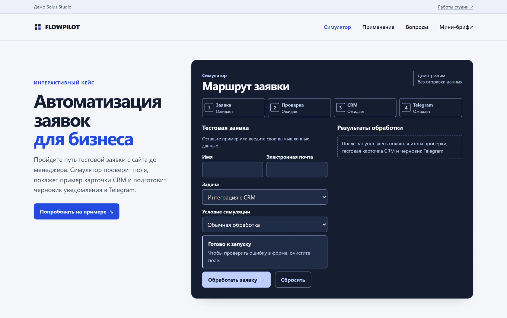
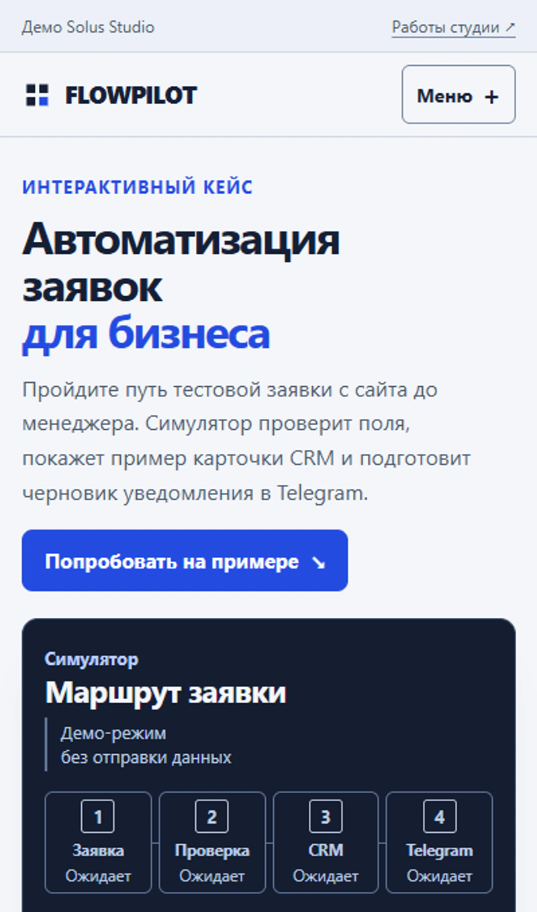
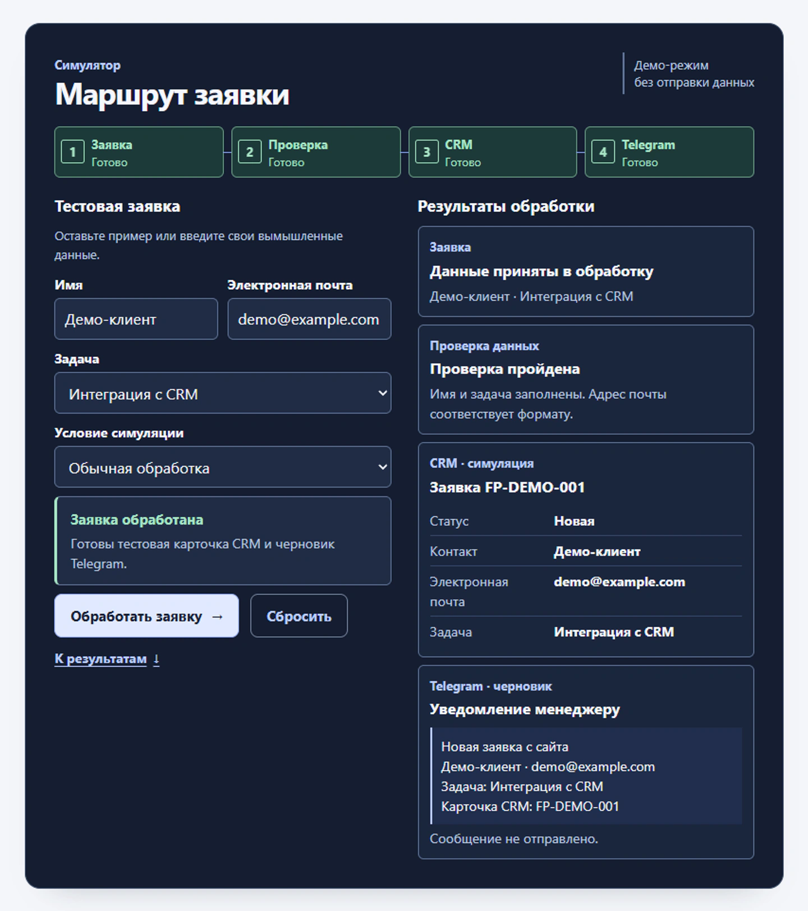

Демонстрационный проект · автоматизация
FLOWPILOT
Интерактивный пример обработки заявки с сайта от проверки данных до уведомления менеджера.
Открыть демо FLOWPILOT
Задача
Показать команде, как заявка с сайта проходит проверку, попадает в CRM и становится уведомлением менеджеру. Ошибки на маршруте должны быть заметны в момент остановки.
Наш вклад
Спроектировали лендинг и браузерный симулятор. Продумали статусы этапов, проверку полей, остановку при сбое и повторный запуск после сброса.
Мобильная версия
Один маршрут в естественном порядке
На телефоне блоки выстроены сверху вниз. Сначала посетитель знакомится со сценарием, затем переходит к настройке примера и видит этапы обработки.

Функциональность
Видно, что получилось на каждом шаге
Симулятор проверяет тестовые данные, формирует пример карточки CRM и черновик сообщения в Telegram. Режим сбоя показывает, где маршрут остановится, если CRM недоступна.

Результат
Рабочая демонстрация обработки заявки
Успешный сценарий и сбой можно воспроизвести в браузере на вымышленных данных. Карточка и уведомление служат примерами внутри симулятора.